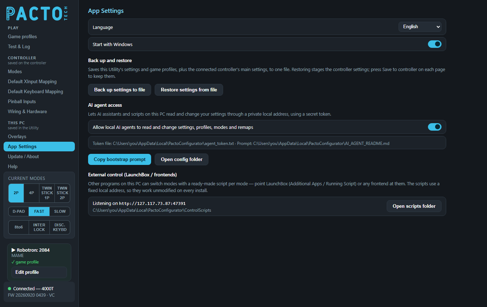

Settings for the Utility itself: language, start-up, backing up and restoring your settings, and how other programs can control your board. This page also explains the sidebar that sits on the left of every page.

App Settings is in the This PC group of the sidebar: everything here is saved on your PC as soon as you change it. There is no Save button. The on-screen banners have their own page, Overlays, and the update settings are at the top of Update / About.
| Setting | What it does |
|---|---|
| Language | The language of the Utility. The list has Arabic, Bengali, Chinese, English, French, German, Hebrew, Hindi, Portuguese, Russian, Spanish and Urdu. The change is immediate. Arabic, Hebrew and Urdu switch the layout to right-to-left. |
| Start with Windows | Starts the Utility when you log in to Windows. It is on by default. Leave it on if you use overlays, game profiles or the mode scripts, because all of these need the Utility running. |
Back up settings to file saves one .pacto file (suggested name
pacto-settings.pacto). It holds:
If no controller is connected, you'll see Backed up app settings only — connect a controller to include device settings.
Restore settings from file loads a .pacto file:
Use it before experiments, or to copy a setup onto another board of the same model.
This section lets an AI assistant or script running on your PC change the Utility and the controller for you. It can read and change settings, game profiles, live modes, button remaps, keyboard maps and board parameters. For example, you could ask it to make the corner badge bigger.
| Control | What it does |
|---|---|
| Allow local AI agents to read and change settings, profiles, modes and remaps | Turns the access on or off. When it is off, the Utility refuses every agent request. |
| Token file / Prompt | The line under the switch shows where both files are. The token file is
agent_token.txt and the prompt is AI_AGENT_README.md. Both are in the Utility's config
folder, %LOCALAPPDATA%\PactoConfigurator. An agent must send the token with every request that reads
or changes anything. |
| Copy bootstrap prompt | Copies a set of instructions to the clipboard. Paste it into your AI assistant, then ask for what you want. The prompt tells the assistant where to find the token. |
| Open config folder | Opens the config folder in File Explorer. |
Other programs on this PC can switch modes, for example LaunchBox (Additional Apps or Running Script) or any other frontend. The Utility makes one ready-made script for each mode, so you can point your frontend at the right script.
http://127.117.73.87:47391 shows the fixed local address the
scripts use. This address is the same on every install, so a script works unchanged on any PC. The folder
that holds the scripts is shown underneath.The Utility must be running for the scripts to work. To write your own scripts or read the current mode back, see Change modes with scripts. For most cabinets, game profiles are simpler: they need no scripts at all.
The sidebar on the left is the same on every page of the Utility.
The pages are grouped by where their settings are kept: Play (Game profiles, Test & Log), Controller, saved on the controller (Modes, Default XInput Mapping, Default Keyboard Mapping, Pinball Inputs, Wiring & Hardware) and This PC, saved in the Utility (Overlays, App Settings, Update / About, Help). See the guide home for what that means when you change something.
These buttons show the board's live mode and let you change it with a click. You only see the ones your board supports.
| Row | Buttons | How they behave |
|---|---|---|
| Player layout | 2P, 4P, TWIN (4-player boards show TWIN STICK 1P and TWIN STICK 2P instead) | One is always selected; click another to switch. |
| Stick output | D-PAD, FAST, SLOW | One is always selected; click another to switch. |
| Toggles | 8to6, INTER LOCK, DISC. KEYBD | Click to turn on, click again to turn off. |
Changes are live. They are not stored as the board's power-on defaults, which you set on the Modes page. When you click DISC. KEYBD (keyboard/disconnect mode), the arcade controls type keys and your USB gamepads take over. The board changes how it appears to Windows, so the connection box can briefly show No controller found while it switches.
Once the Utility has detected a game, a small box shows:
Edit profile takes you to Game profiles with that game's row ready to edit. If the game doesn't have a row yet, one is created.
FW 20260920 0439 · VC. With no board, it reads No controller found.